![Abstract. We present Zoya Fatima, a researcher currently in early pre-training. Unlike models that learn from one pass over the internet, she learns the slow way: reading closely, reproducing results by hand, and asking why a model behaves the way it does before asking how to make it bigger. This profile logs the run so far, a grounding in research methods and the fundamentals of AI, and maps the generative-AI checkpoints she is training toward over the next few years: transformers, diffusion models, retrieval, agents and alignment. Results are preliminary. Collaborators are welcome.](assets/p-abstract-dark.svg)
![Model card: Model: zoya-fatima-v1, an early checkpoint of a human researcher; Architecture: Curiosity-first; asks why before how; Intended use: Research collaboration, paper reading groups, reproducing results, careful GenAI experiments; Training data: Research papers, lecture notes, textbooks, open-source notebooks; Current skills: Research methods, literature review, Python, statistics, AI fundamentals; Fine-tuning on: Machine learning → deep learning → generative models; Known limitations: Context window is currently full of unread papers; Evaluation: Ongoing; see Figure 2 for the training curve](assets/p-modelcard-dark.svg)
       
Copy BibTeX
@misc{fatima2026imagine,
author = {Fatima, Zoya},
title = {Towards Machines That Imagine: A Researcher's Training Run},
year = {2026},
howpublished = {\url{https://github.com/zoyafatima11}},
note = {Early checkpoint; results preliminary}
}